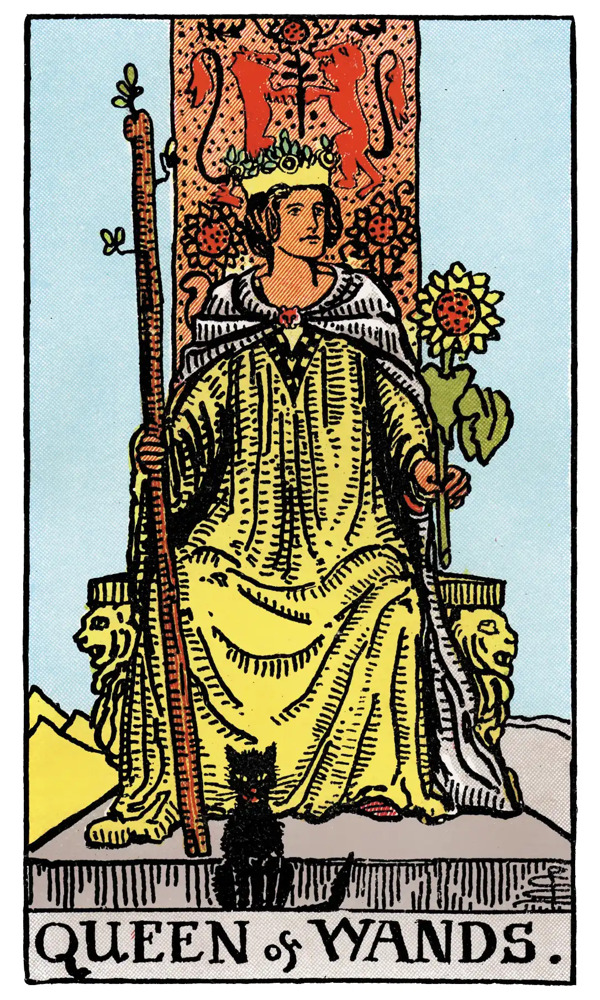

Queen of Wands

A.E.W.
Upright
A dark woman, countrywoman, friendly, chaste, loving, honourable. If the card beside her signifies a man, she is well disposed towards him; if a woman, she is interested in the Querent. Also, love of money, or a certain success in business.
Additionally
A good harvest, which may be taken in several senses.
Recurrence
2 - Sincere friends.
3 - Deception by women.
4 - Great debate.
Reversed
Good, economical, obliging, serviceable. Signifies also – but in certain positions and in the neighbourhood of other cards tending in such directions – opposition, jealousy, even deceit and infidelity.
Additionally
Goodwill towards the Querent, but without the opportunity to exercise it.
Recurrence
2 - Work.
3 - Gluttony.
4 - Bad company.
S.L.M.M.
Upright
Woman living in the country, Lady of the Manor, Love of Money, Avarice, Usury
Reversed
A good a virtuous Woman, but strict and economical, Obstacles, Resistance, Opposition.
Description
The Wands throughout this suit are always in leaf, as it is a suit of life and animation. Emotionally and otherwise, the Queen's personality corresponds to that of the King, but is more magnetic.